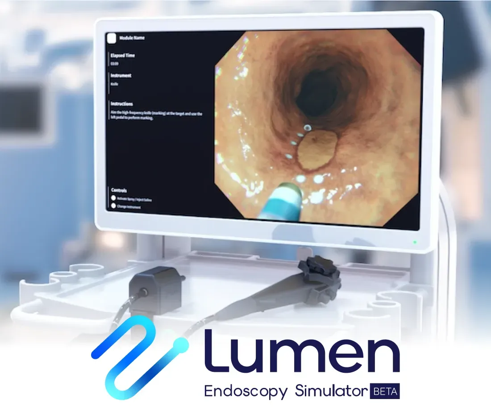

Background
Endoscopic procedures take years to learn, and trainees have limited time with mentors. Lumen runs on a PC with the controller attached and gives every trainee the same repeatable scenarios. The scenarios are supervised by the head of gastroenterology at Tokyo Metropolitan Komagome Hospital.
The beta covers ESD in the esophagus; more procedures and scenarios are planned.

Procedure steps
What I built
- Tissue behaviour. How the tissue responds to each step of the procedure, computed by Burst-compiled solvers.
- Lesion marking. Placing and showing the markings that guide the incision.
- Controller input. Mapping the in-house endoscope controller and foot pedal to movement of the endoscope tip: push and pull, rotation and angle.
- Performance. Faster loading of the mesh data and frame-time work on the simulation.
- Lead programmer. Architecture and conventions, code reviews, mentoring, and the technical side of conversations with doctors and partners.
Esophagus model
The environment is reconstructed from endoscope footage, and the esophagus moves with peristalsis, so trainees work on a moving target, as in a real procedure.
Footage from XR Japan's public product video. Lumen is developed by the team at XR Japan.